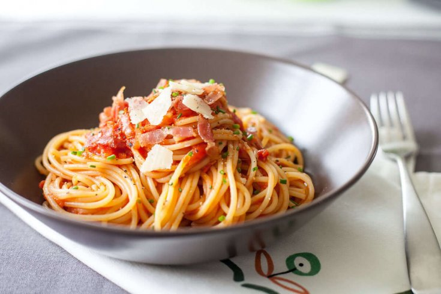

One of the easiest dish my mom used to make for us, comfort food
Ingredients:
- 500g of Pasta
- 250g of Bacon bits
- 300g of Tomato sauce
- Vegetable stock
- Olive Oil
- Fresh Cream
- Salt
Steps
- Start by boiling water and heat up the pan, pan should be big enough size to fit the Bacons bits and later the Tomato sauce so make sur to use a big enough one
- While the water is boiling, put the Bacon bits in the pan on medium to high heat for a few minutes and let them develop a crust,scramble them from time to time so they develop a crust on all sides
- Once the water is boiling, put your pastas in, add some olive oil and salt to the pasta water
- Once you are happy with the states of your Bacon bits, add the tomato sauce, one cube of Vegetable stock and Fresh Cream, the amount of fresh cream depends on how Tomato you'd like your sauce to taste, leave it to simmer for a bit
- Drain the water from your pasta and add the sauce to the saucepan in which you cooked your Pasta or Leave them separated so each person can decide
And you're done, Bon appétit !